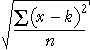

Distance from a target
Bags of potatoes at a supermarket are labelled with weight 3kg. How close are the actual weights to this target?
error = (x − k)
However if we measure n bags of potatoes, how do we combine the errors to give a single measure of accuracy?

mean squared error = 
root mean squared error = 
| The root mean squared error is a 'typical' error. |
Weights of 3kg bags of potatoes
The diagram below shows the weights of seven bags of potatoes labelled '3 kg'.
A square is drawn for each data value whose sides have length equal to the error for that bag of potatoes.
| The area of each square is the squared error for the value. |
The root mean squared error is the side length of the square whose area is the average of the areas of the squares. It is shown in red on the diagram.
Drag the crosses to see how the values affect the root mean squared error.
You may notice that an outlier corresponds to a square with a very large area, so it has a disproportionate effect on the root mean squared error.